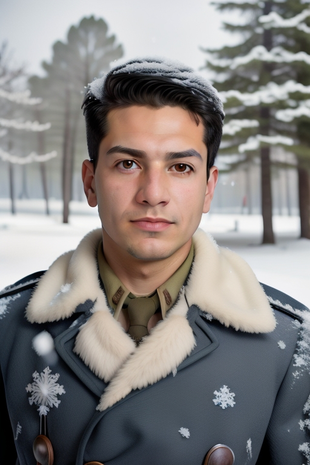
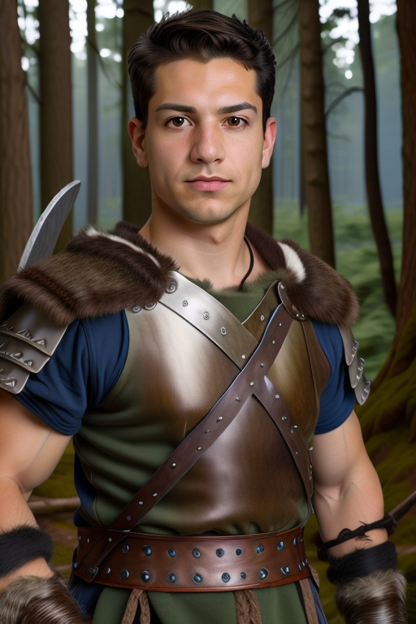

"Seorang lelaki di dalam salji"
Hasil 1:

Prompt 2:
"Seorang pejuang di dalam hutan, gunakan skala sederhana tinggi seperti 78% daripada ini"
Hasil 2:

Dengan ciri Headshot dalam AiCasso, anda boleh mencipta potret yang menakjubkan dan unik hanya dengan menerangkan apa yang anda inginkan. Ia sempurna untuk menghasilkan imej yang menakjubkan sama ada anda mahukan pemandangan yang tenang, seorang pejuang epik, atau apa sahaja yang terlintas dalam imaginasi anda!
"Seorang lelaki di dalam salji"
Hasil 1:"Seorang pejuang di dalam hutan, gunakan skala sederhana tinggi seperti 78% daripada ini"
Hasil 2:Ingin menambah sedikit gaya atau kawalan pada headshot yang dihasilkan? Berikut adalah beberapa pilihan menarik yang boleh anda ubah:
Ingat, parameter ini adalah pilihan sepenuhnya. AiCasso cukup toleran, jadi anda tidak perlu terlalu tepat atau betul dari segi tatabahasa. Hanya terangkan apa yang anda inginkan dengan kata-kata anda sendiri, dan AiCasso akan melakukan keajaiban. Selamat mencipta headshot anda!